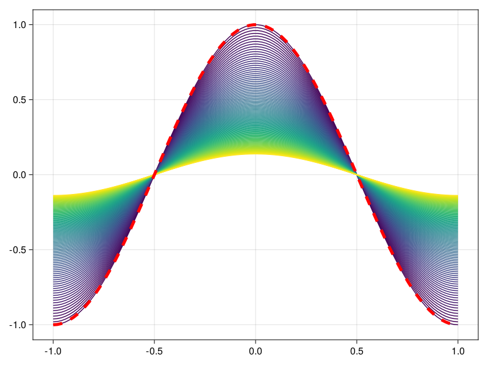
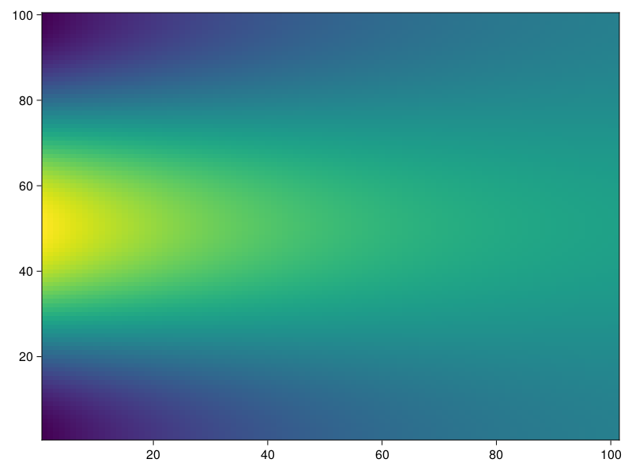

DiffusionSplineFE
Documentation for DiffusionSplineFE.
We are looking at the 1D nonlinear diffusion equation on the interval domain $\Omega = [a, b]$
\[C(x)\frac{\partial T}{\partial t} = \frac{\partial}{\partial x} \left( D(x, T) \frac{\partial T}{\partial x}\right) + S(x,T), \quad x \in \Omega, T \in \mathbb{R}\]
with space-dependent capacity $C(x)$ and diffusion and source terms that can also depend on the variable $T$. Only the specific case of no heat flux across the domain boundaries is considered which corresponds to the Neumann boundary condition
\[\frac{\partial}{\partial x} T(a) = \frac{\partial}{\partial x} T(b) = 0.\]
Usage
A SplineComplex object contains all necessary information about the spline spaces and collocations that are used. Let us create one with cubic splines from 11 knots on the domain $[-1, 1]$
using DiffusionSplineFE
using OrdinaryDiffEq
SC = SplineComplex((-1, 1), 11, 4)For the problem, all three functions $C, D, S$ have to be defined. Let us assume constand capacity and diffusion and the absence of sources or sinks
C(x) = one(x)
D(x) = 0.002 #scalar diffusivity
S(x) = zero(x)Initial spline coefficients are calculated from an initial codition
T_init(x) = cos(π*x)
u0 = initial_coefficients(SC, T_init)Now we are ready to create the ODE problem that can be solved with any method in OrdinaryDiffEq.jl like Crank-Nicolson in this example
tspan = (0, 100)
prob = DiffusionProblem(SC, C, D, S, u0, tspan)
sol = solve(prob, Trapezoid(autodiff=false), saveat=1)Plotting recipes for Makie.jl can be used for visualization. Heatmaps or the custom diffusionplot for the full solution are available, as well as point based plotting for solutions at specific times.
using CairoMakie
fig, ax, lns = diffusionplot(SC, sol, 100)
lines!(ax, SC, sol[1], color=:red, linestyle=:dash, linewidth=5)
heatmap(SC, sol)